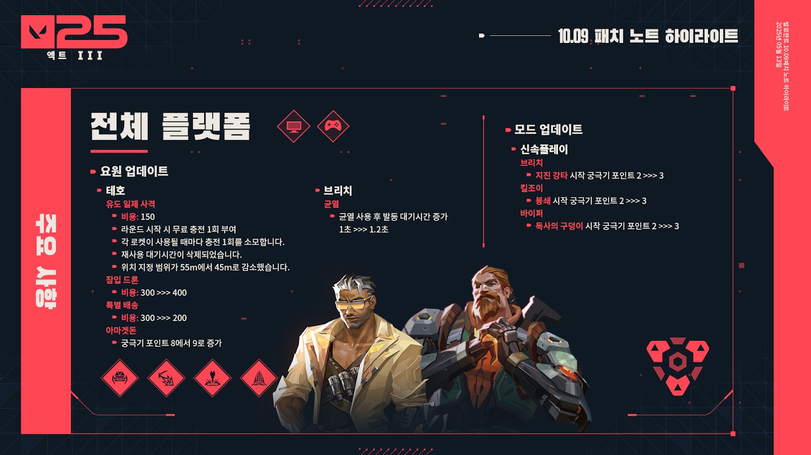

발로란트 10.09 업데이트 요약
잠깐만요. 일어나서 여기 좀 보세요. 테호의 밸런스 업데이트가 방금 도착했답니다.
안녕하세요, 여러분. 케니입니다. 여러분과 함께 10.09 패치를 함께 헤쳐 가기 위해 왔습니다.
오늘 패치에는 많은 분들이 고대하던 테호의 변경 사항, 브리치의 기절 효과에 적용되는 작은 하향, 신속플레이의 시작 궁극기 포인트에 대한 작은 업데이트, 다양한 버그 수정이 포함돼 있습니다.
함께 뛰어들어 보시죠.

전체 플랫폼
요원 업데이트
테호
여러분의 의견을 경청하고 있습니다. 또한 테호가 특정 분야에서 과도한 성능을 보인다는 점에 동의합니다. 요원들의 상태를 지속적으로 지켜보고 있으며, 테호의 로켓이 비정상적인 게임 상황을 자주 만든다고 느꼈습니다. 예를 들어, 테호는 다른 척후대에 비해 큰 희생 없이 로켓을 반복적으로 사용해 라운드의 흐름을 바꿀 수 있습니다. 유도 일제 사격을 강력하고 안정적인 공간 확보 스킬로 유지하되, 그 중요성을 높임으로써 스킬을 낭비 또는 정보 없이 사용했을 때의 대가를 늘리고 상대 팀에게 라운드마다 다양한 전략을 시도해 볼 수 있는 여지를 주고자 합니다. 맵의 위치를 지정하는 안정적인 쓸어내기 능력 자체가 재사용 대기시간이 없더라도 충분히 강력한 도구라고 생각했습니다. 추가로 잠입 드론의 위력을 고려해 테호의 스킬 비용 또한 재조정이 필요하다고 판단했습니다.
- 유도 일제 사격
- 유도 일제 사격을 더욱 유연하지만 재충전할 수 없는 스킬로 변경했습니다. 스카이의 경우처럼 이는 로켓의 위력을 유지하고 스킬 사용당 비용을 높이기 위함입니다. 또한 일부 상황에서 맵을 가로질러 손쉽게 적을 지연시키는 능력이 비정상적이라고 판단하여 약화시켰습니다.
- 비용: 150
- 라운드 시작 시 무료 충전 1회 부여
- 각 로켓이 사용될 때마다 충전 1회를 소모합니다.
- 재사용 대기시간이 삭제되었습니다.
- 위치 지정 범위가 55m에서 45m로 감소했습니다.
- 아마겟돈
- 비슷한 위력을 지닌 다른 궁극기에 맞춰 비용을 증가시켰습니다.
- 궁극기 포인트 8에서 9로 증가
브리치
- 브리치의 균열이 스킬 대응 기준에 미치지 못한다고 판단했습니다. 스킬 범위 정중앙에 있는 경우가 아니라면 브리치의 기절 위협에서 더 자주 벗어날 수 있게 만들고자 합니다.
- 균열
- 균열 사용 후 발동 대기시간 증가 1초 >>> 1.2초
일반 업데이트
- 선물하기
- 많은 플레이어 여러분의 요청에 따라, 5월 16일부터 친구에게 보낼 수 있는 최대 선물 개수를 하루에 5개에서 10개로 늘립니다. 이 변경 사항은 자선 // V25 컬렉션이 추천 상점에 출시될 때 적용됩니다. 따라서 친구에게 보내는 이 세트의 모든 선물은 자선 단체에 보내는 선물이기도 합니다.
모드 업데이트
- 신속플레이
최대 궁극기 포인트 비용은 신속플레이가 출시된 이후 꾸준히 증가했고, 이에 따라 몇몇 요원이 궁극기를 사용하기 어려워졌습니다. 플레이어 여러분께서 훨씬 더 빠르게 궁극기를 사용할 수 있도록 시작 궁극기 포인트를 조정했습니다. 이 변경 사항은 시작 궁극기 포인트를 궁극기 비용에 기반해 비례하게 하기 위한 더 포괄적인 신속플레이 업데이트의 일부입니다.
- 브리치
- 킬조이
- 바이퍼
- 독사의 구덩이 시작 궁극기 포인트 2 >>> 3
버그 수정
- 장식 요소
- 10.08 패치에서, 볼트 플렉스를 장착하고 자세히 보기를 하면 볼트 스킨 시리즈의 스킨이 의도했던 것보다 더 밝게 빛나던 시각 버그를 수정했습니다.
- 처음에는 광과민성 증후군이 있는 플레이어에게 잠재적으로 문제가 될지 우려해 해당 버그를 수정했습니다. 하지만 장기간에 걸쳐 광과민성 검사를 시행한 결과, 해당 버그에 실질적인 위험이 없다는 결론을 내렸습니다. 따라서 해당 버그 수정을 되돌려 이스터 에그로 남겨놓고자 합니다.
- 특정 스킨(도깨비, 에보리 꿈날개, EX.O, 혼돈의 서막, 미스트블룸 등)의 킬 배너가 첫 번째 킬 이후 기존보다 더 작게 나타나던 버그를 수정했습니다.
알려진 문제
- 장식 요소
- 볼트 스킨 시리즈가 기존보다 훨씬 더 밝게 빛나는 버그를 인지하고 있습니다.
- 이 버그는 이전에 볼트 스킨에서 발견하고, 수정하고, 이번 패치에 되돌린 버그와는 다른 별개의 버그입니다. 이 새로운 버그는 볼트 스킨이 과한 밝기로 빛나게 해 광과민성 증후군이 있는 플레이어에게 문제를 일으키고 경쟁전의 공정성에 악영향을 미치기도 합니다.
- 이 버그는 10.11 패치에 수정될 예정입니다.
- 요원
- 오멘이 어둠의 장막 스킬을 사용하기 위해 연막 조준 상태에 들어갈 때, 죽은 아군이 독사의 구덩이와 같은 시야를 제한하는 효과를 무시하고 주변을 볼 수 있는 버그를 인지하고 있습니다.
- 이 버그는 10.10 패치에 수정될 예정입니다.
발로란트 이전 패치노트로 이동//발로란트 10.07 패치노트로 이동